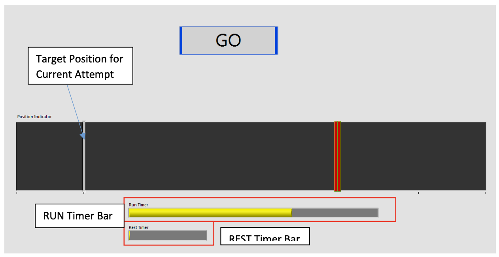

Academic & Research
Postgraduate Thesis - Explainable AI for Medical Diagnosis
Quantitative evaluation of explainable AI methods such as SHAP, LIME, and Integrated Gradients for skin cancer diagnosis models. Focused on enhancing the interpretability and trust in AI-based medical tools.
- Technologies: TensorFlow, Python, SHAP, LIME
- Impact: Improved model transparency in clinical settings.



Humor Genome Project
Developed classifiers and recommendation algorithms for analyzing humor using NLP and machine learning. This project aimed to identify patterns in humor to improve content recommendations.
Project Details
BioRobotics Human Modelling Lab
Worked on developing a haptic lift assist device for General Motors to improve industrial assembly processes. Focused on human-machine interaction for enhanced safety and efficiency.